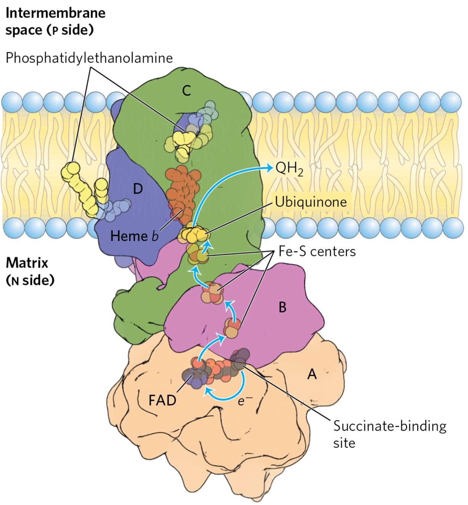
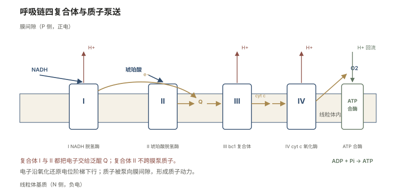

BIO105 · 第 5 章
生物系统中的化学能学
Chemical Energetics in Biological Systems
虚线下划线为术语；悬停查看中文、英文与释义，完整词典见“术语”。
本章目录
本讲把第 4 章的自由能工具用到能量代谢：先建立氧化还原电位与 ΔG 的换算，再逐个解析呼吸链四个复合体的电子与质子路径，最后用质子动力与旋转催化解释 ATP 如何被合成。
本章要点
- 分解代谢分三阶段：大分子→乙酰辅酶 A→三羧酸循环→NADH/FADH2 进入呼吸链。
- 氧化还原反应的自发方向由还原电位决定：电子从低 E° 流向高 E°。
- ΔG = −nFE，ΔG° = −nFE°；Nernst 方程可由 Gibbs 自由能式推出。
- 呼吸链的载体有三类：泛醌、血红素蛋白、铁硫簇；泛醌经半醌自由基分两步接受两个电子与两个质子。
- 四个复合体分工明确：I 氧化 NADH，II 氧化琥珀酸，III 走 Q 循环，IV 把电子交给 O2。
- 一对电子从 NADH 到 O2 释放约 220 kJ/mol，其中约 190 kJ 被保存在质子梯度中。
- 质子动力由化学势差与电势差两部分组成：ΔG = 2.3RTΔpH + FΔψ。
- ATP 合酶通过旋转催化与结合改变机制工作；荧光肌动蛋白丝实验直接证明了 Fo 的旋转。
5.1 分解代谢的三阶段与呼吸链的位置
讲义用一张总览图把能量代谢分成三个阶段，这个框架值得先记住，因为它决定了后面每个复合体的角色。
- 阶段 1：葡萄糖、脂肪酸与氨基酸被氧化，产物是乙酰辅酶 A（acetyl-CoA）。
- 阶段 2：乙酰基进入三羧酸循环citric acid cycle, TCA cycle被进一步氧化，产生 NADH 与 FADH2。
- 阶段 3：NADH 与 FADH2 携带的电子进入线粒体内膜上的一系列电子载体——呼吸链respiratory chain。电子的流动驱动 ATP 的生成。
三个阶段的共同逻辑是：碳骨架逐步被氧化，释放的电子被载体捕获，载体再把电子交给呼吸链。所谓“氧化”，本质上就是失去电子；“还原”就是得到电子。能量并没有在每一步都以热的形式散失，而是被逐步转移到 NADH、FADH2 的高能电子上，最后由呼吸链一次性兑换成质子梯度。
讲义在本讲只深入阶段 3（呼吸链与氧化磷酸化），阶段 1 与 2 的细节留给后续课程。这个边界很重要：本讲的考点集中在电子传递、质子泵送与 ATP 合酶，而不是 TCA 循环的每一步酶。
L5 p.3–4
5.2 氧化还原的化学基础与还原电位
讲义先回到第 3 章的语言：氧化与还原可以看作亲核试剂与亲电试剂之间的电子转移。还原是获得电子，氧化是失去电子；给出电子的分子是还原剂（电子供体），接受电子的分子是氧化剂（电子受体）。
把两个共轭的氧化还原对放在同一溶液中，电子会从电子供体自发流向电子受体：
这个反应能否发生，取决于两个氧化还原对各自对电子的相对亲和力。为了量化这种亲和力，电化学家定义了还原电位reduction potential E：在标准条件下，以标准氢电极为参考，测量某一半反应接受电子的倾向。讲义给出的测量装置包括参考电极与测试池，测试池中 Ox 与 Red 各 1 M、H⁺ 1 M、气体 1 atm，测得的电动势（emf）即为 E。
标准氢电极被规定为参考零点：
与之对照，氧的还原半反应为 ½O2 + 2H⁺ + 2e⁻ → H2O，E° = 0.816 V。正值意味着氧对电子的亲和力远高于氢。
由此得到一条非常实用的规则：电子倾向于从低 E° 流向高 E°。两个半反应的电位差就是电池的电动势，电子沿着“电位升高”的方向流动，同时释放自由能。这条规则贯穿整个呼吸链：NADH 的 E′° 是 −0.320 V，O2/H2O 是 +0.816 V，因此 NADH 的电子会自发流向氧。
电位与自由能的换算由两个式子给出：
其中 n 是转移的电子数，F 是法拉第常数（约 96.5 kJ/V·mol）。负号的意义是：E 为正（电子自发流动）时 ΔG 为负（放能）。
Nernst 方程并非独立假设，而是从 Gibbs 自由能式推导出来的。Nernst 方程Nernst equation写作：
它与 ΔG = ΔG° + RT ln(Q) 完全同构：只要把 ΔG 换成 −nFE，两边同除以 −nF，就得到 Nernst 方程。理解这一点，就不需要分别背两个公式。
Clean vector diagram with a vertical reduction potential axis from minus 0.5 to plus 0.9 volts, showing redox couples as short horizontal bars at their standard potentials: NAD+/NADH at minus 0.320 V, FAD/FADH2 at minus 0.219 V, ubiquinone at plus 0.045 V, cytochrome b, cytochrome c, and the O2/H2O couple at plus 0.816 V, with a single downward electron arrow running from NADH to oxygen and the standard hydrogen electrode marked at 0.00 V. Flat 2D, thin 1.5 px strokes, muted slate blue and warm grey palette, white background, English labels, no cartoon, no gradient, no shadow.
L5 p.6–11
5.3 计算范例：乙醛被 NADH 还原
讲义给出一个完整的氧化还原计算，步骤值得作为模板记住。
反应：乙醛 + NADH + H⁺ → 乙醇 + NAD⁺。
两个半反应及其 E′°：
② NAD⁺ + 2H⁺ + 2e⁻ → NADH + H⁺ E′° = −0.320 V
注意两个半反应都写成“还原”方向。要求总反应，需把半反应 ② 反向（作为氧化），因此总电位为：
代入 ΔG′° = −nFE′°，n = 2：
若进一步求非标准条件下的 ΔG，用 ΔG = ΔG′° + RT ln([乙醇][NAD⁺]/([乙醛][NADH]))。讲义设定乙醛与 NADH 各 1.00 M、乙醇与 NAD⁺ 各 0.100 M，pH 7、25 °C，浓度商为 (0.1 × 0.1)/(1 × 1) = 0.01：
因为 pH 恒定为 7，[H⁺] 可以并入常数而不出现在浓度商中——这是使用 ΔG′° 时的方便之处。结果更负，说明产物浓度低时反应驱动力更强，与第 4 章 ATP 的结论一致。
L5 p.12–13
5.4 三类电子载体：泛醌、血红素与铁硫簇
1948 年，Eugene Kennedy 与 Albert Lehninger 发现线粒体是真核细胞氧化磷酸化的场所。此后逐步鉴定出呼吸链的载体，讲义归纳为三类。
第一类：泛醌（ubiquinone, Q）。它是一种疏水的小分子，能在脂双层中自由扩散，因此可以在复合体之间搬运电子。完全还原需要两个电子与两个质子，并且分两步进行，中间经过半醌自由基semiquinone radical：
讲义特别标注“电子离域与共轭”——泛醌的苯醌环是共轭体系，接受电子后电荷可以分散到环上，这正是它能稳定地经过自由基中间体的原因。这一点与第 3 章“共轭稳定分子”完全一致。
第二类：血红素蛋白（hemoproteins）。细胞色素 c 是代表。它的吸收光谱在还原态有特征性的 α、β、γ 三个吸收带；这些带的出现与消失可用于判断细胞色素的氧化还原状态。血红素的铁在 Fe2+ 与 Fe3+ 之间切换，一次只搬运一个电子。
第三类：铁硫簇（iron-sulfur clusters）。讲义给出 2Fe-2S 与 4Fe-4S 两种形式，并以蓝细菌 Anabaena 7120 的铁氧还蛋白（ferredoxin）为例，它含一个 2Fe-2S 中心：
负值很大，说明铁氧还蛋白是强还原剂，容易给出电子——这与它在光合作用中把电子传给 NADP⁺ 的角色相符（第 6 章）。
把三者的电位排成阶梯：NADH（−0.320 V）→ FAD（−0.219 V）→ 泛醌（+0.045 V）→ 细胞色素 → O2（+0.816 V）。电子沿阶梯下行，每一步的落差都可以用来泵质子。
L5 p.15–20
5.5 复合体 I 与 II：入口的两条路径
呼吸链有四个复合体，讲义按顺序列出：复合体 I（NADH:泛醌氧化还原酶）、复合体 II（琥珀酸脱氢酶）、复合体 III（细胞色素 bc1 复合体）、复合体 IV（细胞色素 c 氧化酶）。
复合体 I 催化电子从 NADH 传给 FMN。从 FMN 出发，两个电子经过一系列铁硫中心传到 Fe-S 中心 N-2；从 N-2 到泛醌（Q）的传递形成 QH2，QH2 随后扩散进入脂双层。质子（H⁺）则通过电子流触发的构象变化被搬运——注意这句话：质子不是被电子直接“推”过去的，而是蛋白构象改变的结果。
方向性由膜的极性标注：复合体 I 的负（N）侧朝向线粒体基质（matrix，即线粒体内部），正（P）侧朝向膜间隙。质子被泵向 P 侧，因此基质变负、膜间隙变正——这为后面的质子动力做准备。
复合体 II 是琥珀酸脱氢酶，也是 TCA 循环中唯一嵌在膜上的酶。琥珀酸的结合位点就在 FAD 的后面；电子从琥珀酸流向 FAD，再经三个铁硫中心传给泛醌。这里有一个易被忽略的细节：血红素 b 不是电子传递的主要路径，而是用来防止活性氧（ROS）的形成。它的作用是“兜底”，在电子泄漏时接收电子，避免氧被单电子还原成自由基。
比较两个入口可以看出能量差异：NADH 的电位是 −0.320 V，琥珀酸/延胡索酸是 +0.031 V。NADH 的电子“更愿意离开”，因此复合体 I 的落差大、能泵质子；琥珀酸的电子起点较高，落差小，复合体 II 不泵质子。这就是为什么 FADH2 产生的 ATP 少于 NADH。

L5 p.21–26
5.6 复合体 III 与 IV：Q 循环与四电子还原
复合体 III（细胞色素 bc1 复合体）的功能核心由三个亚基组成：细胞色素 b（含两个血红素 bH 与 bL）、Rieske 铁硫蛋白（含 2Fe-2S 中心）、细胞色素 c1（含血红素 c1）。复合体有两个不同的泛醌结合位点，分别记为 QN 与 QP。
为什么需要两个位点？因为上游的泛醌一次带两个电子，而下游的细胞色素 c 一次只能接受一个。复合体 III 用 Q 循环Q cycle 解决这个不匹配：讲义以“两个阶段”展示 Q 循环，中间经过半醌自由基（Q·−）与泛醇（QH2）。两个位点分别处理氧化与还原，使电子被逐个交出，同时把质子从 N 侧搬到 P 侧。
复合体 IV（细胞色素 c 氧化酶）负责最后一步：把电子交给 O2。结构上，亚基 I 含血红素 a 与 a3，a3 附近有一个铜离子 CuB，二者共同构成 Fe-Cu 中心；亚基 II 含两个铜离子 CuA，其性质类似铁硫蛋白的 2Fe-2S 中心——两个铜离子均等地共享电子，形成双核中心。
反应路径是：O2 结合到血红素 a3 上，形成过氧衍生物（O22−）。O2 完全还原需要 4 个电子，因此需要两分子细胞色素 c 依次供电子。铁的状态沿 Fe2+（亚铁）→ Fe3+（高铁）→ Fe4+（铁酰，ferryl）变化。这一步的化学难点在于：必须一次性给出四个电子，否则会漏出部分还原的氧中间体（ROS），所以 Fe-Cu 中心把四个电子“攒”在一起再交给氧。

绘图提示词
Clean vector diagram of the inner mitochondrial membrane with four respiratory complexes embedded in order: Complex I, Complex II, Complex III and Complex IV, mobile ubiquinone shuttling between I and III inside the bilayer, mobile cytochrome c shuttling between III and IV on the outer surface, arrows showing electrons entering from NADH at Complex I and from succinate at Complex II and leaving at Complex IV onto oxygen, and proton arrows pumped from the matrix side N to the intermembrane side P at complexes I, III and IV. Flat 2D, thin 1.5 px strokes, muted slate blue and warm grey palette, white background, English labels, no cartoon, no gradient, no shadow.
讲义的总览图给出一个有用的概括：还原型 QH2 与细胞色素 c 是可移动的电子载体，它们把四个复合体串起来；质子外排（H⁺ efflux）发生在三个位置——复合体 I、III、IV。
L5 p.27–33
5.7 质子动力：能量如何被保存
把一对电子从 NADH 经呼吸链传给分子氧，净反应为：
这个反应高度放能。NAD⁺/NADH 的 E′° 为 −0.320 V，O2/H2O 为 +0.816 V，总电位差 1.14 V，因此
如果这 220 kJ 全部变成热，细胞就什么也得不到。实际发生的是：其中大部分能量被用来把质子从基质泵出。定量关系是——每对电子传给 O2，复合体 I 泵出 4 个 H⁺，复合体 III 泵出 4 个，复合体 IV 泵出 2 个，共 10 个。向量方程式写作：
下标 N 与 P 分别表示基质侧（negative）与膜间隙侧（positive）。左边 11 个质子中，1 个来自 NADH + H⁺ 的化学计量，10 个是被泵过去的。
储存在这个梯度中的能量称为质子动力proton-motive force，它有两个分量：
- 化学势能：膜两侧 H⁺ 浓度差带来的能量；
- 电势能：电荷分离（一侧正、一侧负）带来的能量。
两者合起来写成：
推导的关键一步是把 ln(C2/C1) 换成以 10 为底的对数：ln(C2/C1) = 2.3(log[H⁺]P − log[H⁺]N) = 2.3(pHN − pHP) = 2.3ΔpH，其中 ln 10 = 2.3。注意 ΔpH 的符号定义为 pHN − pHP，即基质比膜间隙碱多少。
讲义给出一个算例：设 Δψ = 0.15 V、ΔpH = 0.75、温度 37 °C（310 K），代入得 ΔG = 19 kJ/mol（每摩尔质子）。因为每对电子泵出 10 个质子，约 190 kJ 被保存在梯度中，而总释放量为 220 kJ——能量保存效率相当高。

L5 p.38–40
5.8 逆梯度运输的能量代价
质子动力的另一端是“用梯度做功”。讲义在这一节给出运输过程的自由能计算，这套公式在第 8 章的离子通道与第 7 章的钙泵中都会重现。
把溶质从浓度 C1 搬到 C2，标准条件下（C1 = C2 = 1 M）ΔG′° 为零，因此运输的自由能变化只剩浓度项：
两个算例：10 倍浓度差时，ΔGt = (8.315)(298) ln 10 = 5.7 kJ/mol；104 倍浓度差时，ΔGt = (8.315)(298) ln(104) = 23 kJ/mol。可见自由能代价随浓度比对数增长：浓度差扩大 1000 倍，代价只从 5.7 升到 23 kJ/mol。
若运输的是离子，且没有伴随的反离子，正负电荷会被分开，产生电势——这种运输称为电致运输electrogenic transport。此时自由能代价是化学梯度与电学梯度之和：
其中 Z 是离子的电荷数，F = 96,480 J/V·mol，Δψ 是跨膜电位（伏特）。这个式子的结构与 ΔG = −nFE 相似，只是把“电子”换成了“离子”，把电位差换成了膜电位。
L5 p.34–36
5.9 ATP 合酶与旋转催化
质子动力的最终用途是合成 ATP。复合体 V（ATP 合酶）就是执行这一步的分子马达。质子顺梯度从 P 侧流回 N 侧，释放的自由能驱动 ATP 合酶把 ADP 与 Pi 缩合成 ATP。
机制称为结合改变机制binding-change mechanism，其核心是旋转催化rotational catalysis：酶的 Fo 部分（嵌在膜内、形成质子通道）与 γ 亚基一起旋转，旋转带动 F1 部分的三个催化位点依次改变构象——依次经历“结合底物”“催化合成”“释放产物”三种状态。因为三个位点相位不同，任一时刻总有一个位点在合成 ATP，因此旋转是连续产出而非“一次一转只做一个”。
这一模型有直接的实验证据。讲义引用 Sambongi 等人 1999 年发表于《Science》286 卷 1722 页的工作：把 F1 用基因工程加上一段组氨酸（His）标签，使其牢固黏附在涂有镍络合物的载玻片上；同时把生物素（biotin）共价连接到 Fo 的 c 亚基上。生物素与亲和素（avidin）结合极牢，而亲和素又共价连接在带荧光标记的长肌动蛋白丝上。当加入 ATP 作为 F1 ATPase 活性的底物时，标记的丝朝一个方向旋转，从而证明 Fo 圆柱确实在转。
讲义还记录了一个细节：丝不是平滑旋转，而是离散地跳跃（discrete jumps）。这符合“三个位点依次换构象”的机械模型——每完成一个催化步骤，丝就跳到下一个位置。另一个实验把荧光肌动蛋白丝直接连到 γ 亚基上，得到同样的结论。
Clean vector diagram of ATP synthase with the membrane-embedded Fo proton channel and the soluble F1 head containing three catalytic sites, a central gamma shaft connecting them, curved arrows showing rotation, and a side panel of the experimental setup: F1 anchored to a nickel-coated slide, a biotin tag on the c subunit of Fo, avidin linking a long fluorescent actin filament that rotates in discrete jumps when ATP is added. Flat 2D, thin 1.5 px strokes, muted slate blue and warm grey palette, white background, English labels, no cartoon, no gradient, no shadow.
把全讲串起来：氧化释放电子 → 电子沿电位阶梯下行 → 三个复合体泵出 10 个 H⁺ → 质子动力储存约 190 kJ/mol → 质子回流驱动 Fo 旋转 → F1 三个位点依次合成 ATP。每一步都是化学能形式的转换，而总账由 ΔG 结算。
L5 p.41–44